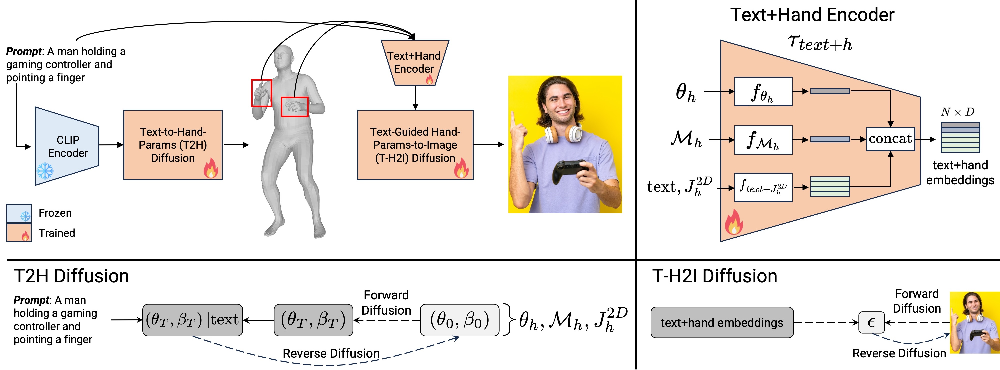
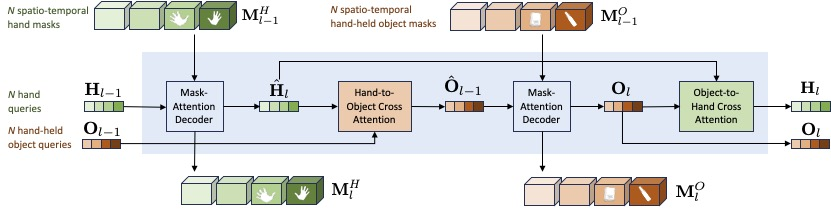
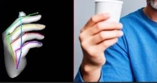
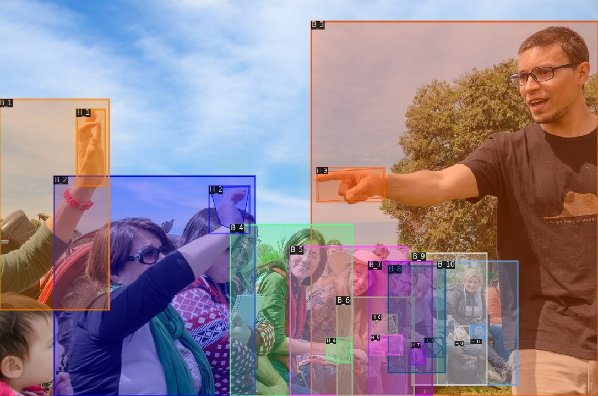
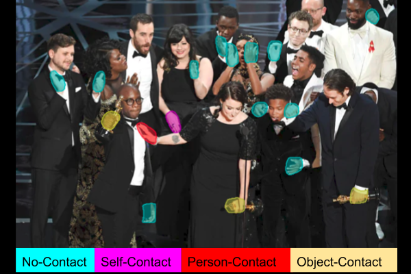
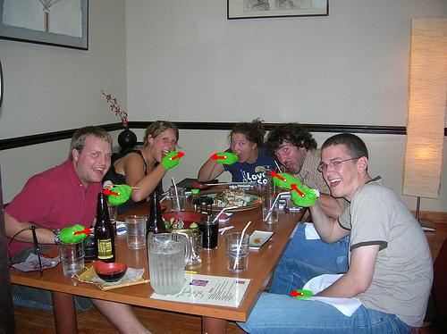
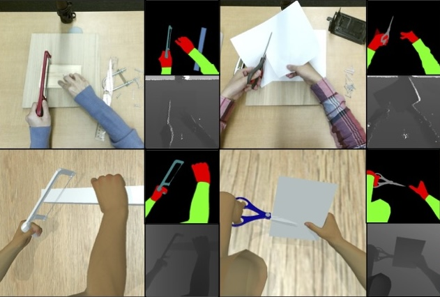

Supreeth Narasimhaswamy
I am a researcher at Adobe Applied Research (GenAI) working on computer vision, machine learning, and generative modeling. Prior to joining Adobe, I was a PhD student in CVLab at the Stony Brook University (New York, US) supervised by Prof. Minh Hoai. As an undergraduate student, I studied Computer Science at the RV College of Engineering (Bengaluru, India).
For any inquiries, feel free to reach out to me via mail!
News
- [Feb. 2024] Our work on generating plausible hands in diffusion-based text-to-image models is accepted to CVPR, 2024.
- [Feb. 2024] Our work on segmenting and tracking hand-held objects is accepted to CVPR, 2024.
- [Feb. 2024] I joined Adobe Applied Research (GenAI) as a full-time researcher.
- [Feb. 2024] I successfully defended my PhD! This has been a fantastic journey!
- [Dec. 2023] I completed a research internship at Adobe Research.
- [Sep. 2023] Our preliminary work on diffusion-based hand generation is accepted at ICCV 2023 Hands Workshop.
- [Oct. 2022] I talked about our work on hand analysis at Adobe Research. Thanks Yi Zhou and Yang Zhou for hosting.
- [Sep. 2022] I completed a research internship at Snap Research, NYC.
- [Jul. 2022] I gave a talk about our work on hand analysis at the Max Planck Institute for Intelligent Systems. Thanks Sai Dwivedi, Dimitrios Tzionas, and Michael Black for hosting.
- [Mar. 2022] Two papers @ CVPR: Our work on hand-body association and hand tracking are accepted to CVPR 2022.
- [Aug. 2021] I completed a research internship at Microsoft.
- [Sep. 2020] Our work on joint hand detection and contact recognition is accepted to NeurIPS, 2020.
- [Jul. 2019] Our work on detecting hands in unconstrained environments is accepted to ICCV, 2019.
- [Jul. 2019] Our work on hand interactions in manual assembly settings is accepted to BMVC, 2019.
- [Aug. 2018] I started my graduate studies at the Department of Computer Science, Stony Brook University.
Publications

HanDiffuser: Text-to-Image Generation With Realistic Hand Appearances
Supreeth Narasimhaswamy, Uttaran Bhattacharya, Xiang Chen, Ishita Dasgupta, Saayan Mitra, Minh Hoai
IEEE/CVF Conference on Computer Vision and Pattern Recognition (CVPR), 2024
Project Page / Paper /
Supreeth Narasimhaswamy, Uttaran Bhattacharya, Xiang Chen, Ishita Dasgupta, Saayan Mitra, Minh Hoai
IEEE/CVF Conference on Computer Vision and Pattern Recognition (CVPR), 2024
Project Page / Paper /
@InProceedings{sn_handiffuser_cvpr_2024,
author = {Supreeth Narasimhaswamy and Uttaran Bhattacharya and Xiang Chen and Ishita Dasgupta and Saayan Mitra and Minh Hoai},
title = {HanDiffuser: Text-to-Image Generation With Realistic Hand Appearances},
booktitle = {IEEE/CVF Conference on Computer Vision and Pattern Recognition (CVPR)},
year = {2024},
}
HOIST-Former: Hand-held Objects Identification, Segmentation, and Tracking in the Wild
Supreeth Narasimhaswamy, Huy Nguyen, Lihan Huang, Minh Hoai
IEEE/CVF Conference on Computer Vision and Pattern Recognition (CVPR), 2024
Project Page / Paper /
Supreeth Narasimhaswamy, Huy Nguyen, Lihan Huang, Minh Hoai
IEEE/CVF Conference on Computer Vision and Pattern Recognition (CVPR), 2024
Project Page / Paper /
@InProceedings{sn_hoist_cvpr_2024,
author = {Supreeth Narasimhaswamy and Huy Nguyen and Lihan Huang and Minh Hoai},
title = {HOIST-Former: Hand-held Objects Identification, Segmentation, and Tracking in the Wild},
booktitle = {IEEE/CVF Conference on Computer Vision and Pattern Recognition (CVPR)},
year = {2024},
}
Text-to-Hand-Image Generation Using Pose- and Mesh-Guided Diffusion
Supreeth Narasimhaswamy, Uttaran Bhattacharya, Xiang Chen, Ishita Dasgupta, Saayan Mitra
IEEE/CVF International Conference on Computer Vision (ICCV), International Workshop on Observing and Understanding Hands in Action, 2023
Project Page / Paper /
Supreeth Narasimhaswamy, Uttaran Bhattacharya, Xiang Chen, Ishita Dasgupta, Saayan Mitra
IEEE/CVF International Conference on Computer Vision (ICCV), International Workshop on Observing and Understanding Hands in Action, 2023
Project Page / Paper /
@InProceedings{sn_handdiffusion_iccv_2023,
author = {Supreeth Narasimhaswamy and Uttaran Bhattacharya and Xiang Chen and Ishita Dasgupta and Saayan Mitra},
title = {Text-to-Hand-Image Generation Using Pose- and Mesh-Guided Diffusion},
booktitle = {IEEE/CVF International Conference on Computer Vision (ICCV), International Workshop on Observing and Understanding Hands in Action},
year = {2023},
}
Whose Hands Are These? Hand Detection and Hand-Body Association in the Wild
Supreeth Narasimhaswamy, Thanh Nguyen, Mingzhen Huang, Minh Hoai
IEEE/CVF Conference on Computer Vision and Pattern Recognition (CVPR), 2022
Project Page / Paper / Code /
Supreeth Narasimhaswamy, Thanh Nguyen, Mingzhen Huang, Minh Hoai
IEEE/CVF Conference on Computer Vision and Pattern Recognition (CVPR), 2022
Project Page / Paper / Code /
@InProceedings{sn_bodyhands_cvpr_2022,
author = {Supreeth Narasimhaswamy and Thanh Nguyen and Mingzhen Huang and Minh Hoai},
title = {Whose Hands Are These? Hand Detection and Hand-Body Association in the Wild},
booktitle = {IEEE/CVF Conference on Computer Vision and Pattern Recognition (CVPR)},
year = {2022},
}
Forward Propagation, Backward Regression and Pose Association for Hand Tracking
Mingzhen Huang, Supreeth Narasimhaswamy, Saif Vazir, Haibin Ling, Minh Hoai
IEEE/CVF Conference on Computer Vision and Pattern Recognition (CVPR), 2022
Project Page / Paper / Code /
Mingzhen Huang, Supreeth Narasimhaswamy, Saif Vazir, Haibin Ling, Minh Hoai
IEEE/CVF Conference on Computer Vision and Pattern Recognition (CVPR), 2022
Project Page / Paper / Code /
@InProceedings{sn_handler_cvpr_2022,
author = {Mingzhen Huang and Supreeth Narasimhaswamy and Saif Vazir and Haibin Ling and Minh Hoai},
title = {Forward Propagation, Backward Regression and Pose Association for Hand Tracking},
booktitle = {IEEE/CVF Conference on Computer Vision and Pattern Recognition (CVPR)},
year = {2022},
}
Detecting Hands and Recognizing Physical Contact in the Wild
Supreeth Narasimhaswamy, Trung Nguyen, Minh Hoai
Advances in Neural Information Processing Systems (NeurIPS), 2020
Project Page / Paper / Code /
Supreeth Narasimhaswamy, Trung Nguyen, Minh Hoai
Advances in Neural Information Processing Systems (NeurIPS), 2020
Project Page / Paper / Code /
@InProceedings{sn_contacthands_neurips_2020,
author = {Supreeth Narasimhaswamy and Trung Nguyen and Minh Hoai},
title = {Detecting Hands and Recognizing Physical Contact in the Wild},
booktitle = {Advances in Neural Information Processing Systems (NeurIPS)},
year = {2020},
}
Contextual Attention for Hand Detection in the Wild
Supreeth Narasimhaswamy, Zhengwei Wei, Yang Wang, Justin Zhang, Minh Hoai
IEEE/CVF International Conference. on Computer Vision (ICCV), 2019
Project Page / Paper / Code /
Supreeth Narasimhaswamy, Zhengwei Wei, Yang Wang, Justin Zhang, Minh Hoai
IEEE/CVF International Conference. on Computer Vision (ICCV), 2019
Project Page / Paper / Code /
@InProceedings{sn_handcnn_iccv_2019,
author = {Supreeth Narasimhaswamy and Zhengwei Wei and Yang Wang and Justin Zhang and Minh Hoai},
title = {Contextual Attention for Hand Detection in the Wild},
booktitle = {IEEE/CVF International Conference. on Computer Vision (ICCV)},
year = {2019},
}
WorkingHands: A Hand-Tool Assembly Dataset for Image Segmentation and Activity Mining
Roy Shilkrot, Supreeth Narasimhaswamy, Saif Vazir, Minh Hoai
British Machine Vision Conference (BMVC), 2019
Project Page / Paper /
Roy Shilkrot, Supreeth Narasimhaswamy, Saif Vazir, Minh Hoai
British Machine Vision Conference (BMVC), 2019
Project Page / Paper /
@InProceedings{sn_workinghands_bmvc_2019,
author = {Roy Shilkrot and Supreeth Narasimhaswamy and Saif Vazir and Minh Hoai},
title = {WorkingHands: A Hand-Tool Assembly Dataset for Image Segmentation and Activity Mining},
booktitle = {British Machine Vision Conference (BMVC)},
year = {2019},
}Webpage Template
This website is based on a template from Michael Niemeyer.